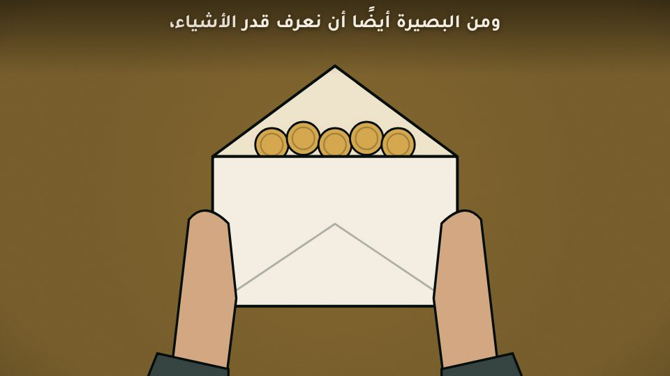

c4-s18: اللحظات بالترتيب 14.1 ث

1.0 ث · إطار 30 · 1 · الفجر
يطلع الفجر على الزقاق، وهو جالس على المصطبة كما تركه c4-s17.

2.8 ث · إطار 85 · 1 · بداية القرار
تضيء الحجارة عند «الحق»، ويرفع رأسه نحو باب أخيه عند «فحسب».

5.0 ث · إطار 150 · 2 · القيام والمشي
قام عند «نحبه» ويمشي عند «ونتبعه».

6.5 ث · إطار 195 · 2 · التجاوز
عند «أهواءنا» يتجاوز الحجر الذي استدار عنده في c3-s20، ويقف لحظة والظرف عند جنبه.

8.9 ث · إطار 268 · 3 · المال
«قدر الأشياء»: نظرة إلى الظرف؛ النقود فيه معًا كما هي، بلا عد.

11.0 ث · إطار 330 · 4 · الطريق
يغلق الظرف ويكمل المشي من «أكبر».

13.7 ث · إطار 410 · 4 · بلا وصول
«ولا ننقصها حقها»: ما زال يمشي، وباب أخيه أمامه كما هو؛ الوصول للفصل 6.